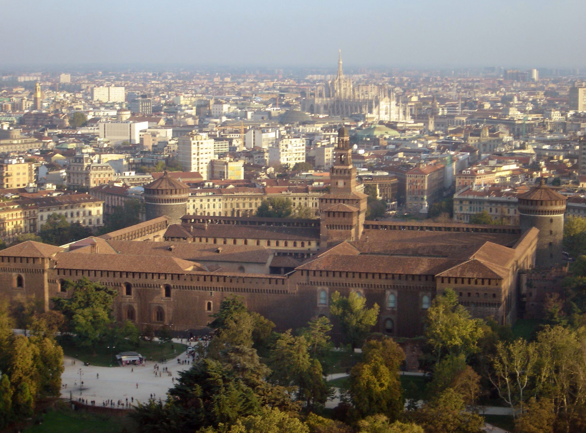

Castello Sforzesco
The Castello Sforzesco is a medieval fortification. It was built in the 15th century by Francesco Sforza, Duke of Milan, on the remnants of a 14th-century fortification. Later renovated and enlarged, in the 16th and 17th centuries it was one of the largest citadels in Europe. Extensively rebuilt by Luca Beltrami in 1891-1905, it now houses several of the city's museums and art collections. The original construction was ordered by Galeazzo II Visconti, a local nobleman, in 1358-c.1370; this castle was known as the Castello di Porta Giova (or Porta Zubia), from the name of a gate in walls located nearby. It was built in the same area of the ancient Roman fortification of Castrum Portae Jovis, which served as castra pretoria when the city was the capital of the Roman Empire.
In 1450, Francesco Sforza, once he had shattered the republicans, began reconstruction of the castle to turn it into his princely residence. In 1452 he hired the sculptor and architect Filarete to design and decorate the central tower, which is still known as the Torre del Filarete.
The Castello Sforzesco is a medieval fortification. It was built in the 15th century by Francesco Sforza, Duke of Milan, on the remnants of a 14th-century fortification. Later renovated and enlarged, in the 16th and 17th centuries it was one of the largest citadels in Europe. Extensively rebuilt by Luca Beltrami in 1891-1905, it now houses several of the city's museums and art collections. The original construction was ordered by Galeazzo II Visconti, a local nobleman, in 1358-c.1370; this castle was known as the Castello di Porta Giova (or Porta Zubia), from the name of a gate in walls located nearby. It was built in the same area of the ancient Roman fortification of Castrum Portae Jovis, which served as castra pretoria when the city was the capital of the Roman Empire.
In 1450, Francesco Sforza, once he had shattered the republicans, began reconstruction of the castle to turn it into his princely residence. In 1452 he hired the sculptor and architect Filarete to design and decorate the central tower, which is still known as the Torre del Filarete.
